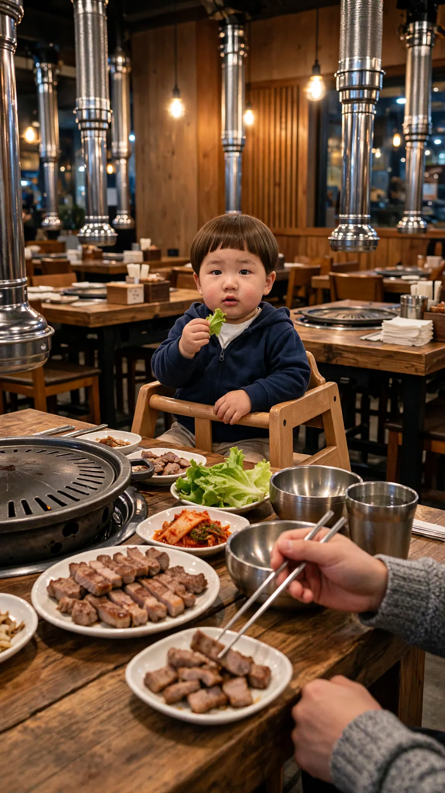
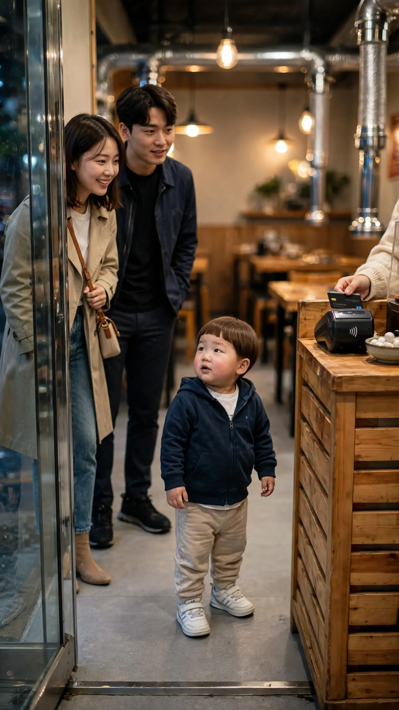
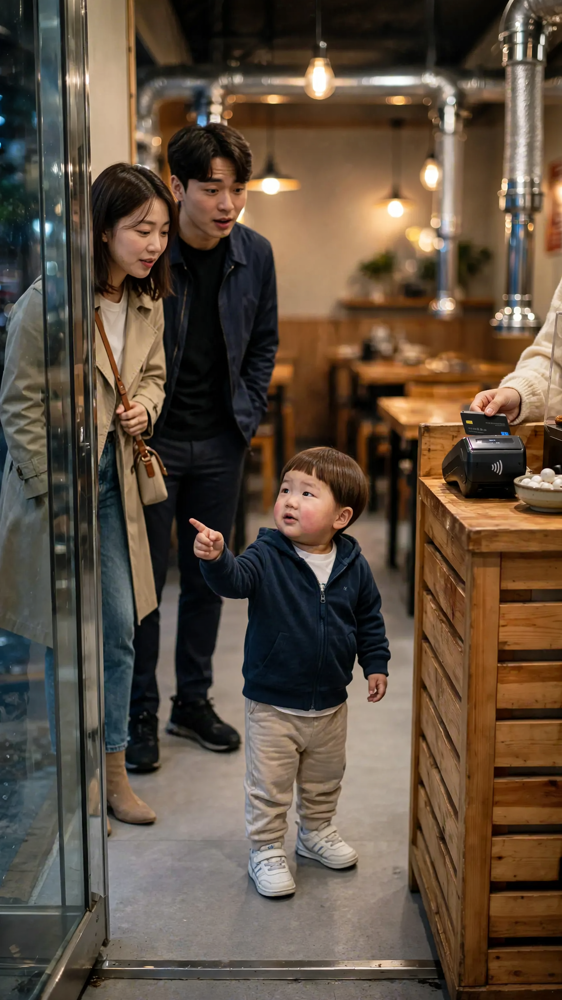
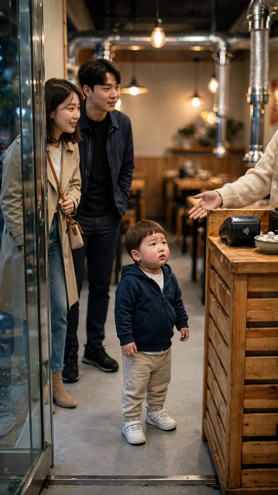

🎬 고깃집에서 손님한테 한 두 살의 한마디
4컷 · 26초 · 🟦 표시 컷은 도윤이 입 다묾 · 실패하면 같은 걸로 2~3번 다시 걸기
1번 컷
⏱ 6초🟦 아빠(화면 밖): 「여기 고기 별로다~ 건너편이 더 맛있네.」


[Character Action & Continuity] Realistic Korean slice-of-life short video clip. a table in a casual Korean barbecue restaurant in Korea. Maintain exact appearance from start frame: a 24-month-old Korean toddler boy wearing a navy hooded zip-up jacket over a white t-shirt, beige pants and small white sneakers. Scale: a small 24-month-old toddler build with natural proportions. Fixed positions: Doyoon sits in the booster chair facing the camera; the grill is off, far left. Doyoon stays silent and just listens; only the off-screen father speaks. [0-3s] the off-screen father says his line right away while Doyoon listens [3-6s] Doyoon blinks and nods slowly, as if storing the information [Dialogue Script & Emotion] 아빠(화면 밖), 0초부터 바로: (작게 투덜거리듯 편하게) "여기 고기 별로다~ 건너편이 더 맛있네." [Audio & Voice Specifications] Single Voice Track Only: One off-screen Korean man in his early 30s, the boy's father, speaking from outside the frame in a warm, gentle, relaxed voice. Sound Format: One off-screen adult man voice in a quiet room. Background Sound: Quiet indoor room tone. Continuous steady indoor room air. [Technical Directives] 카메라: 테이블 너머 아기 의자의 도윤이가 보이는 미디엄 샷. 카메라 고정. 화면: 도윤이와 방만 보인다. 벽과 가구 표면은 무늬 없이 비어 있다. 말소리는 화면 밖 아빠 목소리 하나, 도윤이는 입을 다문다.
2번 컷
⏱ 6초🟦 손님: 「여기 맛있을 것 같은데?」


[Character Action & Continuity] Realistic Korean slice-of-life short video clip. the checkout counter by the entrance of a Korean barbecue restaurant in Korea. Maintain exact appearance from start frame: a 24-month-old Korean toddler boy wearing a navy hooded zip-up jacket over a white t-shirt, beige pants and small white sneakers. Scale: a small 24-month-old toddler build with natural proportions. Fixed positions: The couple stands on the left, parents at the counter right, Doyoon in the middle. Doyoon stays silent looking at the couple; only the woman customer speaks. [0-3s] the woman of the couple on the left says her line right away; Doyoon turns to her [3-6s] Doyoon looks up at the couple with wide curious eyes [Dialogue Script & Emotion] 손님, 0초부터 바로: (기대에 차서 밝게) "여기 맛있을 것 같은데?" [Audio & Voice Specifications] Single Voice Track Only: One Korean woman customer in her late 20s who just walked in, bright curious voice. Sound Format: One adult woman voice in a quiet restaurant. Background Sound: Quiet indoor room tone. Continuous steady indoor room air. [Technical Directives] 카메라: 계산대 옆 도윤이가 입구 쪽을 보는 미디엄 샷. 카메라 고정. 화면: 도윤이와 가게, 커플만 보인다. 말소리는 여자 손님 목소리 하나, 도윤이는 입을 다문다.
3번 컷
⏱ 8초도윤: 「우리 아빠가 여기 맛없대요. 건너편이 더 맛있대요.」


[Character Action & Continuity] Realistic Korean slice-of-life short video clip. the checkout counter by the entrance of a Korean barbecue restaurant in Korea. Maintain exact appearance from start frame: a 24-month-old Korean toddler boy wearing a navy hooded zip-up jacket over a white t-shirt, beige pants and small white sneakers. Scale: a small 24-month-old toddler build with natural proportions. Fixed positions: The couple stands on the left, parents at the counter right, Doyoon in the middle. [0-5s] Doyoon looks up at the couple and says his line right away, sincere and helpful, pointing to the entrance [5-8s] Doyoon nods firmly with a proud little smile [Dialogue Script & Emotion] 도윤 (단독 발화, 0초부터 바로): (좋은 정보를 알려 주듯 친절하고 진지하게) "우리 아빠가 요기 맛없대요. 건너편이 더 맛있대요." [Audio & Voice Specifications] Single Voice Track Only: Definite 18 to 24-month-old Korean INFANT TODDLER boy voice. Low-pitched, cute, raspy little boy toddler voice. Strictly NOT a school-age child, NOT female. Sound Format: Solo toddler voice in a quiet room. Background Sound: Quiet indoor room tone. Continuous steady indoor room air. [Technical Directives] 카메라: 커플을 올려다보는 도윤이 얼굴이 보이는 미디엄 샷. 카메라 고정. 화면: 도윤이와 방만 보인다. 벽과 가구 표면은 무늬 없이 비어 있다. 도윤이 입모양 100% 완벽 립싱크.
4번 컷
⏱ 6초🟦 엄마(화면 밖): 「도, 도윤아~!」


[Character Action & Continuity] Realistic Korean slice-of-life short video clip. the checkout counter by the entrance of a Korean barbecue restaurant in Korea. Maintain exact appearance from start frame: a 24-month-old Korean toddler boy wearing a navy hooded zip-up jacket over a white t-shirt, beige pants and small white sneakers. Scale: a small 24-month-old toddler build with natural proportions. Fixed positions: The couple stands on the left, parents at the counter right, Doyoon in the middle. Doyoon stays silent with a sulky pout; only the off-screen mother speaks. [0-2s] the off-screen mother says her line right away in a flustered voice [2-6s] Doyoon blinks twice and tilts his head, puzzled, looking up toward the counter [Dialogue Script & Emotion] 엄마(화면 밖), 0초부터 바로: (몹시 당황해서 말을 더듬으며) "도, 도윤아~!" [Audio & Voice Specifications] Single Voice Track Only: One off-screen Korean woman in her early 30s, the boy's mother, speaking from outside the frame in a calm, warm, matter-of-fact voice. Sound Format: One off-screen adult woman voice in a quiet room. Background Sound: Quiet indoor room tone. Continuous steady indoor room air. [Technical Directives] 카메라: 계산대 옆에서 어리둥절한 도윤이 미디엄 샷. 카메라 고정. 화면: 도윤이와 방만 보인다. 벽과 가구 표면은 무늬 없이 비어 있다. 말소리는 화면 밖 엄마 목소리 하나, 도윤이는 입을 다문다.